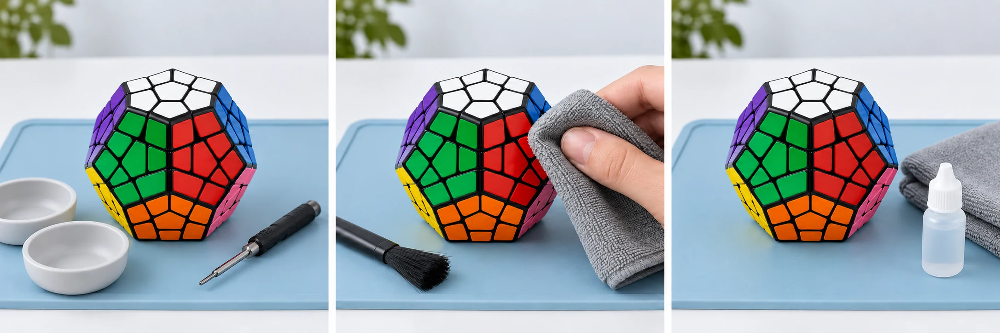

Garde les nombreuses pièces du Mégaminx organisées pendant son entretien. Photographie les couleurs, nettoie doucement les surfaces de contact et remonte les pièces avec leurs bons repères.
30 à 45 minutes 6 étapes Démontage selon le modèle
Avant le premier geste
Sur ton établi.
Un espace propre et bien éclairé. Les petites pièces vont dans la coupelle.
Photographie les faces avant de commencer : le schéma de couleurs peut varier selon le modèle. Suis sa notice pour le démontage et les réglages. Le temps indiqué est une estimation, hors séchage.

Avant le premier gesteIllustration générée · Vue extérieure
Étape 1 / 6
Le démontage
Préparer le Mégaminx
Photos de référence + coupelles de tri
Le Mégaminx possède de nombreux coins, arêtes et centres. Commence avec le puzzle résolu et prends des photos sous plusieurs angles pour conserver les couleurs des faces voisines.
Prépare des coupelles séparées pour les différentes familles de pièces et note les réglages que la notice prévoit de modifier.
Retire une première arête uniquement selon la méthode prévue pour ton modèle. Continue doucement avec les autres pièces accessibles, sans chercher à tout démonter.
Range les coins et les arêtes par catégorie, en gardant les repères de couleurs. Photographie chaque zone avant de poursuivre.
Le nettoyage extérieurIllustration générée · Vue extérieure
Étape 3 / 6
Le soin
Nettoyer et sécher les pièces
Chiffon microfibre + brosse souple
Essuie les pièces avec un chiffon doux et enlève la poussière ou l’ancien lubrifiant avec une petite brosse souple.
Si la notice le permet, traite les saletés tenaces sur le plastique avec un chiffon à peine humide et du savon doux. Conserve ton tri pendant le nettoyage.
Essuie les pièces, puis laisse-les sécher complètement avant le remontage. Utilise un chiffon sec ou un coton-tige pour les parties internes.
Nettoyer avant de lubrifierIllustration générée · Vue extérieure
Étape 4 / 6
Le soin
Lubrifier les surfaces de contact
Facultatif
Lubrifiant spécial puzzle compatible
Sur les surfaces propres et sèches, dépose une petite quantité de lubrifiant compatible avec ton Mégaminx, aux endroits prévus par le fabricant.
Respecte le dosage du produit. Une fois le puzzle remonté, les rotations de ses différentes faces permettront de répartir le lubrifiant.
Après le remontageIllustration générée · Vue extérieure
Étape 5 / 6
La remise en route
Remonter le Mégaminx
Pièces triées + photos de référence
Replace les pièces dans l’ordre indiqué par la notice. Travaille progressivement autour des centres en t’aidant des photos du puzzle résolu.
Vérifie les deux couleurs de chaque arête et les trois couleurs de chaque coin avec les faces voisines. Restaure les réglages que tu avais modifiés.
Le contrôle finalIllustration générée · Vue extérieure
Étape 6 / 6
La remise en route
Vérifier toutes les faces
Ton Mégaminx remonté
Tourne doucement chacune des faces plusieurs fois, sans chercher la vitesse. Vérifie que les mouvements restent réguliers dans toutes les directions.
Les pièces ne doivent pas se coincer ni présenter de jeu excessif. Si un réglage a été modifié, ajuste-le uniquement selon la notice, par petites corrections.
Étape 1 sur 6
Illustrations générées pour CubeMaster : elles montrent un Mégaminx intact et son entretien extérieur, pas un démontage documenté. Pour les pièces internes et le remontage, suis la notice de ton modèle et tes propres photos.
Les bons réflexes
Questions fréquentes sur le nettoyage du Mégaminx.
Nettoyage, séchage et lubrification.
Peut-on nettoyer un Mégaminx sans le démonter ?
Oui. Un chiffon microfibre et une brosse souple permettent de nettoyer les faces et de retirer la poussière accessible. Pour enlever les résidus internes, prévois un démontage adapté au modèle et des photos de référence avant de retirer les pièces.
Comment retrouver les bonnes couleurs au remontage ?
Photographie ton Mégaminx résolu sous plusieurs angles avant de commencer. Pendant le remontage, vérifie les couleurs des arêtes et des coins avec les centres voisins. N’utilise pas automatiquement le schéma d’un autre modèle.
Peut-on laver les pièces du Mégaminx à l’eau ?
Ne plonge pas le puzzle assemblé dans l’eau. Si la notice le permet, utilise un chiffon à peine humide sur le plastique, sans tremper les aimants ni les autocollants. Les parties métalliques restent au sec ; les pièces doivent sécher complètement avant le remontage.
Quel lubrifiant convient à un Mégaminx ?
Choisis un lubrifiant spécial puzzle compatible avec ton modèle. Applique une petite quantité sur les surfaces propres et sèches prévues par le fabricant, puis tourne les différentes faces après remontage. Évite les huiles domestiques et le WD-40.
Que vérifier si une face du Mégaminx accroche ?
Contrôle le placement des pièces autour de cette face, leur orientation et les réglages éventuellement modifiés. Retire les résidus visibles et vérifie qu’il n’y a pas d’excès de lubrifiant. Si le blocage persiste, arrête-toi et consulte la notice plutôt que de forcer.